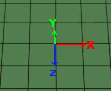
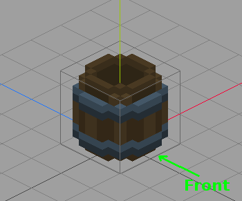

Acknowledgements: A big part of this guide comes from the excellent guide on regions by Discourse user Tuhalu.
Ever wonder what the settings for the mob, destination and region_collision_shape components in placeable objects JSON files mean? Roughly speaking, these define how hearthlings interact with placed objects in the world. If your model has the same dimensions than the entity you copied then the values might be already correct. But if your entity has different dimensions, here's how to determine these settings.
World coordinates
The game world has its own set of coordinates based on a right-handed system. Assuming "north" is into the screen and up is above the ground, then when you first start a new game +Y is up, +Z is south and +X is east (assuming you didn't rotate the camera).
In all the pictures to follow, the color of the axis tells you which it is. By convention, X is always red, Y is always green and Z is always blue. 
Each of those black grid squares is 1 "unit" size (press Z to enter zones mode in the game and see the grid for yourself).
A note on object coordinates
The coordinate system of objects in Qubicle is not the same as the world coordinate system in Stonehearth. Qubicle uses a left-hand coordinate system and Stonehearth uses a right-handed coordinate system. This has an impact on the offsets you use later.
The exact difference is the direction of the Z-Axis. In Qubicle, the positive Z-Axis points towards the back of an object (or the "north"). In Stonehearth, the positive Z-Axis points to the front of an object (or the "south").
Here is the barrel in Qubicle. Note that the Z axis faces away from the front of the barrel. 
 It might be different in other voxel editors. For Qubicle, make sure to always export your model with Z-axis as right-hand, otherwise the model might be flipped in game, or rotate strangely.
It might be different in other voxel editors. For Qubicle, make sure to always export your model with Z-axis as right-hand, otherwise the model might be flipped in game, or rotate strangely.
Other properties of the mob component
In the JSON files of entities from the base mods, you might see other properties inside the "mob" component.
- "interpolate_movement" -- a flag for interpolating movement for animated entities. It's set on the mob mixin, so most entities get it from there.
- "has_free_will" -- a flag for entities with AI (again, they get it from the mob mixin). Used in some Lua files to check if an entity has free will.
- "ignore_gravity" -- a flag for ignoring gravity physics. Used in the builder, and for certain entities. With this our entity won't fall if the ground below them disappears, or if they're on top of a tree and we chop it.
- "allow_vertical_adjacent" -- this property is added to most items via the
stonehearth\mixins\placed_object\placed_object.jsonmixin. It's related to placing hangable items (so that hearthlings can place them after a ladder has been automatically created, even if the item is in a wall right below the ceiling). In general, if the item you copied had it, then use it too.